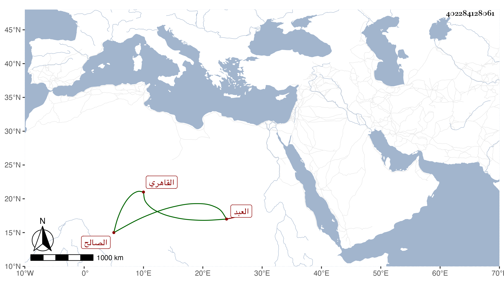

0902Sakhawi.DawLamic.ITO20230111-ara1.EIS1600.402284128061
Biography ID: 402284128061
868
علي بن عثمان بن علي النور القاهري العبد الصالح ويعرف بابن عكاشة وبلغني أنها نسبة للصحابي الشهير . ممن تنزل في الجهات كالبيبرسية وسعيد السعداء وغيرهما وكان يحضر مجالس شيخنا في الإملاء وغيره ثم تغير خاطره منه ولكن تلافاه وكذا ممن كان يجله ويعتقده ابن الهمام والمناوي والظاهر جقمق وكثر توجهه إلى الخير بحيث كان يعتكف بخلوة الخطابة من جامع عمرو ويكثر التهجد والتلاوة ، ولم يزل على حاله حتى مات في يوم السبت العشرين من شوال سنة ثمان وخمسين وقد أسن رحمه الله .
